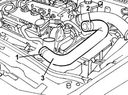

1088D23 sleeve from thermostat to rigid pipe carrying fluid to pump - r r
- Path
- Procedures > 10 ENGINE > 1088 ENGINE COOLING > 1088D coolant hoses and sleeves > 1088D23 sleeve from thermostat to rigid pipe carrying fluid to pump - r r
- Kind
- repair procedure (removal / refitting; the operation number is the code)
- Applies to
- engines: 1.9 JTD 8V; all production periods
- Interactive page
- https://sloeber94.github.io/elrnDB-a147/en/#/3025077
Applies to: engines: 1.9 JTD 8V; all production periods
 Removing
Removing
 Refitting
Refitting7055B54 under-engine guard - r r
Position a suitable container to collect the coolant.
1. Disconnect the hose from the connector on the rigid pipe.
2. Disconnect the hose from the connector on the thermostat.
3. Remove the hose connecting the thermostat-rigid pipe.

Applies to: engines: 1.9 JTD 8V; all production periods
Refitting
RemovingFit the hose connecting the thermostat-rigid pipe.
Connect the hose to the thermostat and to the rigid pipe.